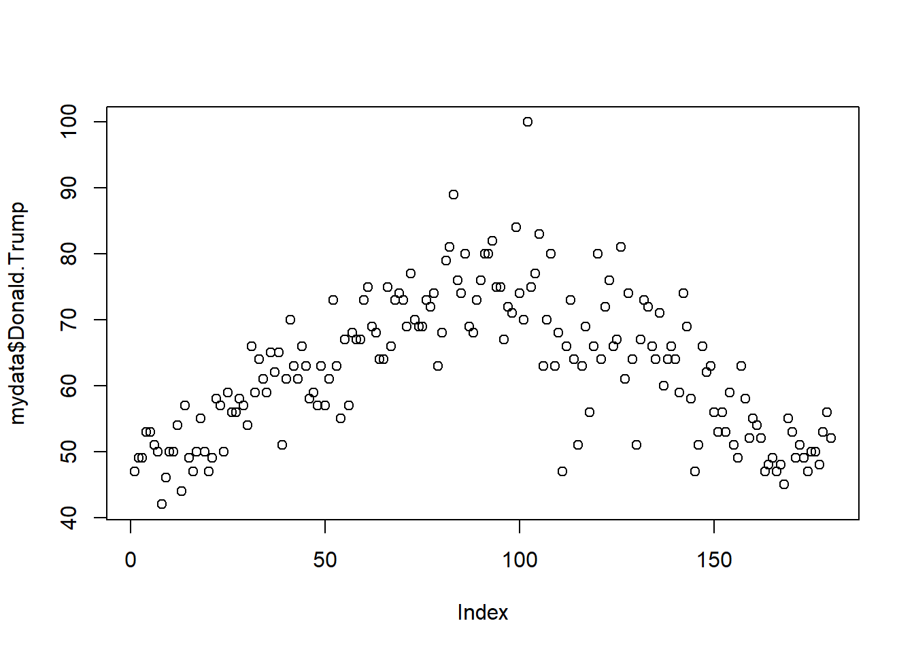
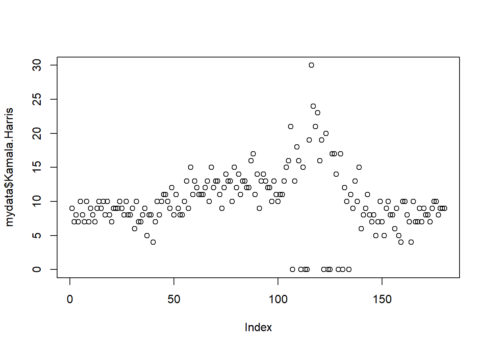
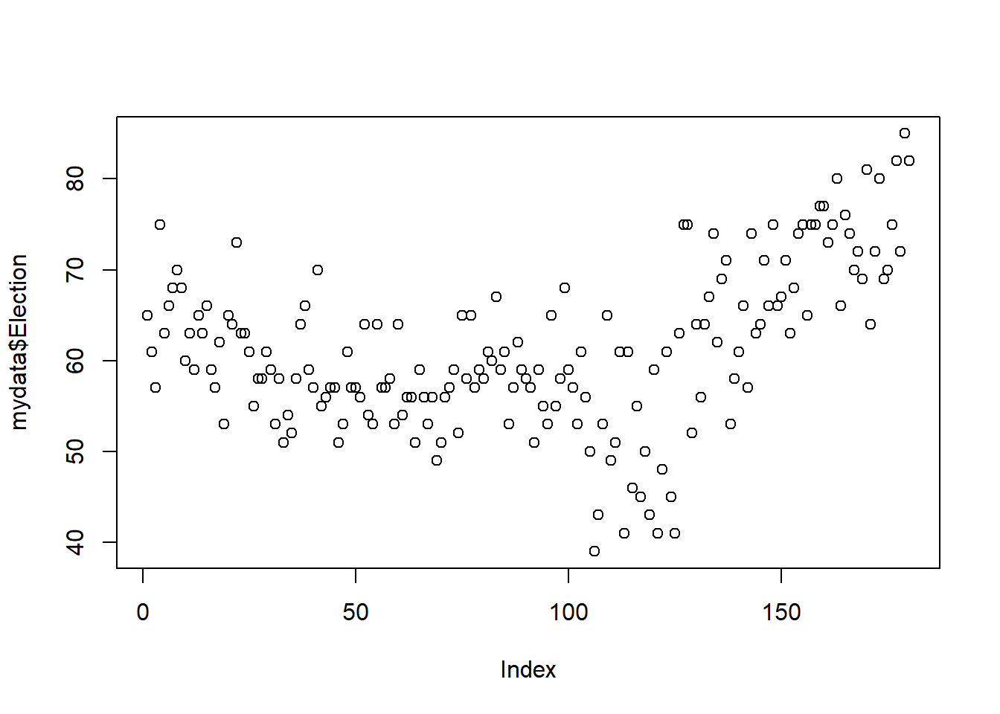
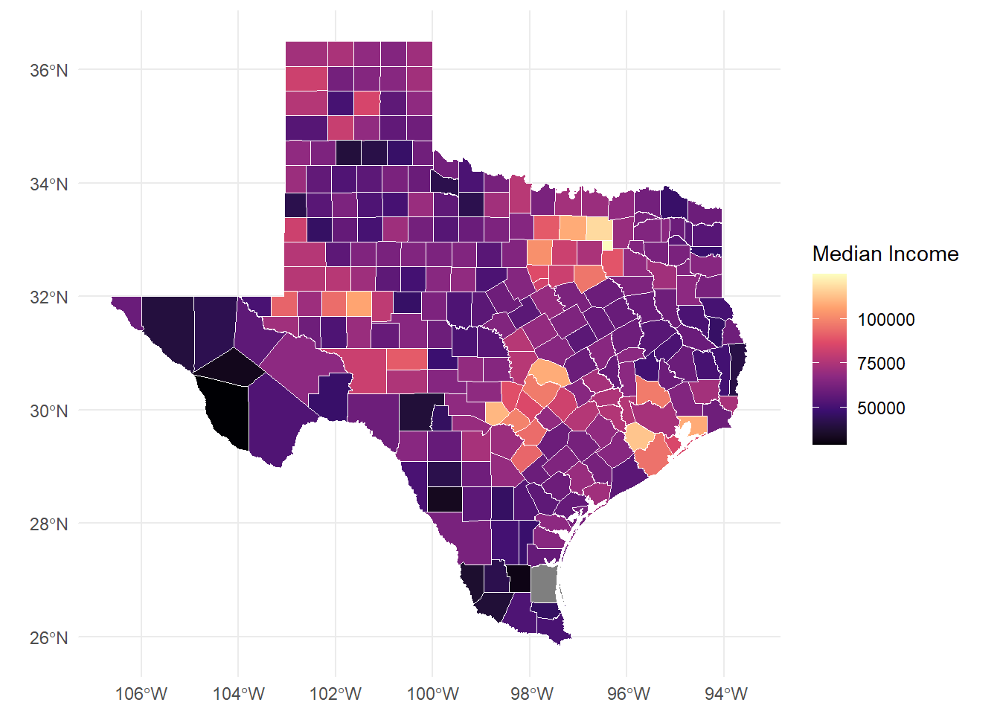

This website was created using Quarto. I started by creating the contents with a basic cosmos theme. However to create custom CSS, I utilized Claude.
To do this I configured Python-based API integration, that establishes a local server bridge between Claude and my RStudio IDE. Claude’s first attempt at CSS was rather ugly though, so it required some significant adjustments to get right.
I have included my bio on the home page, as well as links to main projects. My CV is currently being developed, but is present in the menu as well. There’s also a bit of my work around this site, as well as links to my other professional social medias.
The manual download method is straightforward - just point, click, and download from the Google Trends website. It’s fine for quick one-off analyses when you don’t need to repeat the process. But it’s time-consuming if you’re working with multiple queries, impossible to automate, and not reproducible without detailed documentation.
The gtrendsR package approach requires some R knowledge upfront, but it’s much more efficient for anything beyond a single exploratory analysis. Everything is scripted, so your methodology is transparent and reproducible. You can batch multiple queries, automate recurring data collection, and the data comes back as clean R data frames ready for analysis - no manual formatting needed.
For research projects or any analysis you’ll need to update regularly, the programmatic method is the clear choice. The initial learning curve pays off quickly in time saved and better documentation.



Linking to GEOS 3.13.1, GDAL 3.11.0, PROJ 9.6.0; sf_use_s2() is TRUE# Examine variables to find codes
acsb <- load_variables(2023, "acs5", cache = TRUE)
acss <- load_variables(2023, "acs5/subject", cache = TRUE)
# Import demographic variables from TidyCensus
acs_var <- c(
med_inc = "B19013_001", # median household income
med_rent = "B25031_001", # median monthly housing costs
soc_hisp = "B03002_012" # Hispanic/Latino population (if you need this for filtering)
)
# Get Texas county data
county_data <- get_acs(
geography = "county",
state = "TX",
variables = acs_var,
year = 2023,
survey = "acs5",
output = "wide",
geometry = TRUE
) Getting data from the 2019-2023 5-year ACSDownloading feature geometry from the Census website. To cache shapefiles for use in future sessions, set `options(tigris_use_cache = TRUE)`.
|
| | 0%
|
| | 1%
|
|= | 1%
|
|= | 2%
|
|== | 2%
|
|== | 3%
|
|== | 4%
|
|=== | 4%
|
|=== | 5%
|
|==== | 5%
|
|==== | 6%
|
|===== | 6%
|
|===== | 7%
|
|===== | 8%
|
|====== | 8%
|
|====== | 9%
|
|======= | 9%
|
|======= | 10%
|
|======= | 11%
|
|======== | 11%
|
|======== | 12%
|
|========= | 12%
|
|========= | 13%
|
|========= | 14%
|
|========== | 14%
|
|========== | 15%
|
|=========== | 15%
|
|=========== | 16%
|
|============ | 16%
|
|============ | 17%
|
|============ | 18%
|
|============= | 18%
|
|============= | 19%
|
|============== | 19%
|
|============== | 20%
|
|============== | 21%
|
|=============== | 21%
|
|=============== | 22%
|
|================ | 22%
|
|================ | 23%
|
|================ | 24%
|
|================= | 24%
|
|================= | 25%
|
|================== | 25%
|
|================== | 26%
|
|=================== | 26%
|
|=================== | 27%
|
|=================== | 28%
|
|==================== | 28%
|
|==================== | 29%
|
|===================== | 29%
|
|===================== | 30%
|
|===================== | 31%
|
|====================== | 31%
|
|====================== | 32%
|
|======================= | 32%
|
|======================= | 33%
|
|======================= | 34%
|
|======================== | 34%
|
|======================== | 35%
|
|========================= | 35%
|
|========================= | 36%
|
|========================== | 36%
|
|========================== | 37%
|
|========================== | 38%
|
|=========================== | 38%
|
|=========================== | 39%
|
|============================ | 39%
|
|============================ | 40%
|
|============================ | 41%
|
|============================= | 41%
|
|============================= | 42%
|
|============================== | 42%
|
|============================== | 43%
|
|============================== | 44%
|
|=============================== | 44%
|
|=============================== | 45%
|
|================================ | 45%
|
|================================ | 46%
|
|================================= | 46%
|
|================================= | 47%
|
|================================= | 48%
|
|================================== | 48%
|
|================================== | 49%
|
|=================================== | 49%
|
|=================================== | 50%
|
|=================================== | 51%
|
|==================================== | 51%
|
|==================================== | 52%
|
|===================================== | 52%
|
|===================================== | 53%
|
|===================================== | 54%
|
|====================================== | 54%
|
|====================================== | 55%
|
|======================================= | 55%
|
|======================================= | 56%
|
|======================================== | 56%
|
|======================================== | 57%
|
|======================================== | 58%
|
|========================================= | 58%
|
|========================================= | 59%
|
|========================================== | 59%
|
|========================================== | 60%
|
|========================================== | 61%
|
|=========================================== | 61%
|
|=========================================== | 62%
|
|============================================ | 62%
|
|============================================ | 63%
|
|============================================ | 64%
|
|============================================= | 64%
|
|============================================= | 65%
|
|============================================== | 65%
|
|============================================== | 66%
|
|=============================================== | 66%
|
|=============================================== | 67%
|
|=============================================== | 68%
|
|================================================ | 68%
|
|================================================ | 69%
|
|================================================= | 69%
|
|================================================= | 70%
|
|================================================= | 71%
|
|================================================== | 71%
|
|================================================== | 72%
|
|=================================================== | 72%
|
|=================================================== | 73%
|
|=================================================== | 74%
|
|==================================================== | 74%
|
|==================================================== | 75%
|
|===================================================== | 75%
|
|===================================================== | 76%
|
|====================================================== | 76%
|
|====================================================== | 77%
|
|====================================================== | 78%
|
|======================================================= | 78%
|
|======================================================= | 79%
|
|======================================================== | 79%
|
|======================================================== | 80%
|
|======================================================== | 81%
|
|========================================================= | 81%
|
|========================================================= | 82%
|
|========================================================== | 82%
|
|========================================================== | 83%
|
|========================================================== | 84%
|
|=========================================================== | 84%
|
|=========================================================== | 85%
|
|============================================================ | 85%
|
|============================================================ | 86%
|
|============================================================= | 86%
|
|============================================================= | 87%
|
|============================================================= | 88%
|
|============================================================== | 88%
|
|============================================================== | 89%
|
|=============================================================== | 89%
|
|=============================================================== | 90%
|
|=============================================================== | 91%
|
|================================================================ | 91%
|
|================================================================ | 92%
|
|================================================================= | 92%
|
|================================================================= | 93%
|
|================================================================= | 94%
|
|================================================================== | 94%
|
|================================================================== | 95%
|
|=================================================================== | 95%
|
|=================================================================== | 96%
|
|==================================================================== | 96%
|
|==================================================================== | 97%
|
|==================================================================== | 98%
|
|===================================================================== | 98%
|
|===================================================================== | 99%
|
|======================================================================| 99%
|
|======================================================================| 100%# Create map
texas_map <- ggplot() +
geom_sf(data = county_data,
aes(fill = med_incE), # Changed to use actual variable
color = "white",
linewidth = 0.2) +
scale_fill_viridis_c(option = "magma") + # Added color scale
theme_minimal() +
labs(fill = "Median Income")
texas_map
Attaching package: 'rvest'The following object is masked from 'package:readr':
guess_encodingPart 1: Scrape Foreign Exchange Reserves from Wikipedia
# Target URL
url <- 'https://en.wikipedia.org/wiki/List_of_countries_by_foreign-exchange_reserves'
# Read HTML
wikiforreserve <- read_html(url)
# Extract table using XPath
foreignreserve <- wikiforreserve %>%
html_nodes(xpath='//*[@id="mw-content-text"]/div[1]/table[1]') %>%
html_table()
# Convert to dataframe
fores <- foreignreserve[[1]]
# Assign clean column names
names(fores) <- c("Rank", "Country", "Forexres", "Date", "Change", "Sources")Warning: The `value` argument of `names<-()` must have the same length as `x` as of
tibble 3.0.0.Warning: The `value` argument of `names<-()` can't be empty as of tibble 3.0.0.| Rank | Country | Forexres | Date | Change | Sources | NA | NA |
|---|---|---|---|---|---|---|---|
| Country(as recognized by the U.N.) | Continent | Including gold | Including gold | Excluding gold | Excluding gold | Last reporteddate | Ref. |
| Country(as recognized by the U.N.) | Continent | millions U.S.$ | Change | millions U.S.$ | Change | Last reporteddate | Ref. |
| China | Asia | 3,643,149 | 41,079 | 3,389,306 | 31,221 | 31 Aug 2025 | [3] |
| Japan | Asia | 1,324,210 | 19,774 | 1,230,940 | 16,230 | 31 Aug 2025 | [4] |
| Switzerland | Europe | 1,007,710 | 13,935 | 897,295 | 14,490 | 31 Jul 2025 | [5] |
| Russia | Europe/Asia | 734,100 | 14,300 | 434,487 | 1,517 | 14 Nov 2025 | [6] |
| India | Asia | 692,576 | 5,543 | 585,719 | 216 | 14 Nov 2025 | [7] |
| Taiwan | Asia | 597,430 | 4,390 | 544,300 | 1,071 | 31 Aug 2025 | [8] |
| Saudi Arabia | Asia | 434,547 | 21,728 | 434,116 | 21,728 | 7 Nov 2024 | [9] |
| Hong Kong | Asia | 421,400 | 5,126 | 416,216 | 85 | 8 Nov 2024 | [10] |
Clean the Data
Fix Date Variable
# Remove citation brackets from Date column
fores$newdate <- str_split_fixed(fores$Date, "\\[", n = 2)[, 1]
fores$newdate <- trimws(fores$newdate)
# Convert to proper date format
fores$clean_date <- as.Date(fores$newdate, format = "%d %B %Y")
# Show before/after
fores %>%
select(Country, Date, newdate, clean_date) %>%
head(5) %>%
kable()| Country | Date | newdate | clean_date |
|---|---|---|---|
| Continent | Including gold | Including gold | NA |
| Continent | Change | Change | NA |
| Asia | 41,079 | 41,079 | NA |
| Asia | 19,774 | 19,774 | NA |
| Europe | 13,935 | 13,935 | NA |
Remove Unneeded Rows and Columns
[1] "Rank" "Country" "Forexres" "Date" "Change"
[6] "Sources" NA NA "newdate" "clean_date"if(ncol(fores) >= 6) {
names(fores)[1:6] <- c("Rank", "Country", "Forexres", "Date", "Change", "Sources")
# If there are extra columns, name them too
if(ncol(fores) > 6) {
names(fores)[7:ncol(fores)] <- paste0("Extra", 1:(ncol(fores)-6))
}
}
# NOW do your cleaning
fores_clean <- fores %>%
slice(-c(1, 2)) %>% # Skip first 2 rows
filter(Rank != "Rank") %>% # Remove repeated headers
filter(!is.na(Country)) %>% # Remove empty rows
select(Rank, Country, Forexres, Date)
# Convert Rank to numeric
fores_clean$Rank <- as.numeric(fores_clean$Rank)Warning: NAs introduced by coercion| Rank | Country | Forexres | Date |
|---|---|---|---|
| NA | Asia | 3,643,149 | 41,079 |
| NA | Asia | 1,324,210 | 19,774 |
| NA | Europe | 1,007,710 | 13,935 |
| NA | Europe/Asia | 734,100 | 14,300 |
| NA | Asia | 692,576 | 5,543 |
| NA | Asia | 597,430 | 4,390 |
| NA | Asia | 434,547 | 21,728 |
| NA | Asia | 421,400 | 5,126 |
| NA | Asia | 415,700 | 4,300 |
| NA | Americas | 388,571 | 7,465 |
Summary Statistics
Total countries/entities: 196 cat("Date range:", min(fores_clean$Date, na.rm = TRUE), "to",
max(fores_clean$Date, na.rm = TRUE), "\n")Date range: 0.1 to 954 Save Cleaned Data
Part 2: Scrape Another Wikipedia Table
# Different Wikipedia table
gdp_url <- 'https://en.wikipedia.org/wiki/List_of_countries_by_GDP_(nominal)'
# Read HTML
gdp_html <- read_html(gdp_url)
# Extract ALL tables first to see what's available
all_tables <- gdp_html %>%
html_table(fill = TRUE)
# Check how many tables were found
cat("Number of tables found:", length(all_tables), "\n")Number of tables found: 7 # Usually the main GDP table is one of the first few
# Try different table numbers to find the right one
gdp_data <- all_tables[[3]] # Adjust this number based on what you find
# OR use class selector instead of XPath
gdp_table <- gdp_html %>%
html_nodes("table.wikitable") %>%
html_table(fill = TRUE)
# Take the first wikitable
if(length(gdp_table) > 0) {
gdp_data <- gdp_table[[1]]
} else {
stop("No GDP table found")
}
# Clean column names
names(gdp_data) <- names(gdp_data)[1:ncol(gdp_data)] # Keep existing names for now
# Display to see structure
head(gdp_data) %>% kable()| Country/Territory | IMF(2025)[6] | World Bank(2024)[7] | United Nations(2023)[8] |
|---|---|---|---|
| World | 117,165,394 | 111,326,370 | 100,834,796 |
| United States | 30,615,743 | 29,184,890 | 27,720,700 |
| China[n 1] | 19,398,577 | 18,743,803 | 17,794,782 |
| Germany | 5,013,574 | 4,659,929 | 4,525,704 |
| Japan | 4,279,828 | 4,026,211 | 4,204,495 |
| India | 4,125,213 | 3,912,686 | 3,575,778 |
Part 3: Data Collection Plan for Research
Proposed Research Question How do economic indicators (GDP, foreign reserves) relate to housing stability and child poverty outcomes in different countries?
Data Acquisition Plan
Wikipedia Tables (using rvest): - Foreign exchange reserves (already completed) - GDP by country - Public debt levels - Government spending on social programs
World Bank Data Portal: - Use API or web scraping for poverty rates - Social protection indicators - Housing affordability metrics
# Automated collection function
scrape_wiki_economic_data <- function(url, table_num, col_names) {
page <- read_html(url)
table <- page %>%
html_nodes(xpath = paste0('//*[@id="mw-content-text"]/div[1]/table[',
table_num, ']')) %>%
html_table()
df <- table[[1]]
names(df) <- col_names
return(df)
}
# Example usage - collect multiple tables
urls <- c(
reserves = "https://en.wikipedia.org/wiki/List_of_countries_by_foreign-exchange_reserves",
gdp = "https://en.wikipedia.org/wiki/List_of_countries_by_GDP_(nominal)",
debt = "https://en.wikipedia.org/wiki/List_of_countries_by_public_debt"
)
# Loop through and collect all tables
all_economic_data <- map(urls, ~{
read_html(.x) %>%
html_table() %>%
pluck(1)
})Steps: 1. Scrape data weekly to track changes 2. Standardize country names across tables 3. Convert all monetary values to USD 4. Handle missing data and citations 5. Merge tables by country name 6. Export to clean CSV files
Quality Checks: - Validate date formats - Check for duplicate entries - Flag outliers - Document data sources
Conclusion
Web scraping with rvest provides efficient access to tabular data from Wikipedia and similar sources. Key lessons:
For research purposes, combining web scraping with official APIs creates comprehensive datasets while maintaining data quality and ethical standards.
Scraped data, as retrieved, tells us little about the full content of the text without using advanced analysis. The meta data is more immediately useful, if there are questions regarding the number of hearings on a day, and what the hearing is about.
Improving this is possible with ETL designed based on the use case. To broadly improve the applications of the data set, we would create new variables by parsing out the content of the text strings. For example, creating a variable by matching words in the title to a list of known countries. If an individual is interested in only one topic within public affairs, they could filter only titles related to this topic. If we want to know what congress is talking about broadly, we can use text mining to understand what topics have been occurring within a given date range.